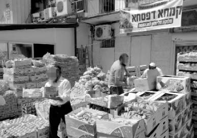

Sky High Prices on the Threshold of Geula
Chazal have given a number of signs by which we can recognize the period before Moshiach comes. Among other things, they say that there will be inflation. • In recent times, those living in Eretz Yisroel are seeing this come true as the Ministry of the Treasury has started drastically raising prices

“The poor of Eretz Yisroel take precedence over the poor of the Diaspora” (Yoreh Deah 251:3)
Food prices are going up in Eretz Yisroel. So is the price of gas. The rise in the cost of water has become a fact of life and according to the Treasury Department, prices will continue to rise. That the housing market has skyrocketed is nothing new and many people have stopped dreaming of buying their own home when it’s difficult to find a decent rental. Inflation is one of the signs of Geula, “ha’yoker ya’amir,” but perhaps nobody considered it happening quite as severely as this.
Although it’s full impact is not yet realized, inflation mainly affects the lower and middle classes.
RABBI YIGAL TZIPPORI: “WE CAN’T SEND FOOD PACKAGES.”
The ones most greatly affected by the rise in prices are the poor, of course, who need help regardless. Because of inflation, chesed organizations will have a hard time continuing their work of distributing food and maintaining soup kitchens when the budgets they have been working with until now will not be enough to cover their expenses.
At the Beis Batya soup kitchen operated by Chabad in Kiryat Shmonah, they are already having a hard time making payments because of the rise in price of staple foods.
Rabbi Yigal Tzippori who runs the place said, “The economic situation affects us. We buy large quantities of food every month. Oil alone went up by 40% and other prices went up too. It puts us in a difficult spot. We distribute 600 meals daily to people’s homes. Unfortunately, due to the rise in the cost of gas, we started distributing the food at central distribution spots because it’s hard for us to go to the homes of the lame and blind. We don’t have the financial ability to continue doing what we’ve been doing.”
R’ Tzippori said, “I was alarmed when I heard about people who did fine for five years and now they need help. We owe 350,000 shekels and I don’t know what to do. And don’t forget, we provide 600 meals every day.”
The soup kitchen is funded in part by the owner of the Itoran company, Izzy Sharetzky, who donates tens of thousands of shekels every month. The expense to the Chabad house in funding the place is about 250,000 a month. “The government helps us with only 80,000 shekels a year from the Welfare Ministry. We rely on donations but under current conditions it is hard to go on.”
RABBI TZVI FRIEDMAN: “IN ANOTHER FEW WEEKS, WE WILL FEEL THE SQUEEZE.”
Rabbi Tzvi Friedman of Migdal HaEmek runs another soup kitchen. He told us of the serious ramifications of inflation:
“At the moment, inflation has not yet affected us drastically, but I think that within a few weeks we will start to feel the squeeze. We still have a large supply of products in our warehouse but it will be used up over the next few weeks and we will be facing a serious problem. Until now, we could buy oil for five shekels. Starting today, the cost of a bottle of oil will go up to eight shekels. When you buy in quantity, the difference of three shekels is significant.
“Another problem for us is that most of our donations come from the public and we anticipate a reduction in donations due to inflation. The burden of inflation tends to fall hardest on the working class people and it is feared that it will be hard for people to keep up their regular donations.
“The most important factor here is the needy. We will start to feel a change shortly when the number of people who need help and turn to us will rise significantly. It won’t be easy to keep up with our regular work while also adding new people to the roster.”
How are you preparing for the future?
“At the moment there aren’t any clear answers. We are looking at all kinds of options. One option that we started implementing already is having telemarketers calling people and asking them to donate. We hope that by adding to the number of donors we will be able to meet our goals and help even more needy people. We hope that if at least the donations don’t shrink, we can preserve what we already do.”
How can you deal with inflation of prices of basic food items?
“We are looking into a number of possibilities. We may have to buy cheaper products instead of products from brand name companies. There are competing companies whose products are cheaper and the quality is not necessarily less than the brand names. If this doesn’t help we will try to lower the cost of the food packages any way we can. As a last resort we will provide less in the food packages but we really don’t want to do that.”
Who are you helping?
“Anybody can ask us for help and we don’t really check them out since our assumption is that someone who asks us for help is really needy. It is possible that due to the new reality, we will have to be more careful about who we give to and the criteria will change. There is an order of priorities and today, the priority is whoever needs help can receive it.”
Are you preparing to expand what you provide to accommodate a greater need?
“Yes. We are working in anticipation of an increased demand of our services but what we can provide depends on the donations we receive. Our hope is that we will succeed in increasing donations so we don’t have to cut into the food packages. We need to adjust to the marketplace. Our considerations are like those in business where it’s a matter of supply and demand.”
What are you providing as of now?
“On a daily basis we feed 240 people who come to our soup kitchen to eat their one hot meal a day. Once a month we distribute nearly 200 food baskets. Before holidays we give out over 500 large food packages that include everything needed for Yom Tov from chicken to fish, fruits and vegetables and matza for Pesach. The distribution we are gearing up for now is for Pesach and since the soup kitchen is closed on Pesach, we have to help all the needy who rely on us.”
Who asks you for help?
“There are two categories. There are people who are in a bad financial state. Some of them are alone and elderly and cannot prepare a hot meal for themselves. They come to our soup kitchen. The second group consists mainly of families of people who lead normative lives but are having a hard time contending with expenses. They receive food packages every month. We work in tandem with relief agencies and the government’s social services and are provided with names.
“The families who receive help are not necessarily what you’d call poverty stricken. With many of them, you wouldn’t notice anything if you weren’t apprised of their situation. Unfortunately, today the economic situation is such that even otherwise normal families have to receive help in order to manage.
RABBI YOSEF ALGAZI: “IT’S NOT EASY BUT WE SEE MIRACLES.”
Many shluchim who run chesed organizations are feeling helpless. If, in the past, they could allow themselves to run a giant chesed project before Yom Tov, today the situation has changed. We spoke with Rabbi Yosef Algazi, shliach to the Kiryat Yovel neighborhood of Yerushalayim. He runs a large chesed organization that includes a soup kitchen in conjunction with the non-profit Chasdei Yosef.
He also runs a unique project – a fruit and vegetable market, that takes place every Thursday. Local residents can buy quality fruits and vegetables (under the hechsher of the Badatz HaEdah HaChareidis) at subsidized prices. Every week, when the market closes, all the leftover fruits and vegetables are distributed to the needy. Many benefit from this arrangement – the families who shop in the market enjoy low prices for produce with a hechsher that they cannot find in local stores. In addition, the needy benefit.
When we spoke with R’ Algazi he sounded agitated. “Looking at it from the perspective of ‘the natural order,’ the new reality will be a serious problem for us. We have a soup kitchen which provides so many hot meals a day and it costs a lot of money. Aside from the food, we have to maintain the place, paying for the water and electricity, cleaning crew and other expenses. It’s hard to maintain it now, so it’s not clear how we will continue to maintain it under more severe conditions.”
Do you see a change in the situation?
“Right now we don’t see a change in prices but within a short time, we will. This situation raises our deficit every week and if in the past we were able to finance this chesed operation with thousands of shekels a week, now we need double the money. We see our deficit doubling and it’s not clear how we will carry on. The new prices affect all products, even fruits and vegetables as well as dry goods, meat, and basic items. The Chabad house continues with all its activities and distributes food packages and we really hope to be able to continue doing that.
“Another problem that affects us is that donations are shrinking. We have mekuravim who donated to us in the past but now they need our help. As prices rise, the donations shrink.”
What do you plan on doing about it?
“When you see how families benefit from the work we do, whether the weekly fruit and vegetables market or the food packages or soup kitchen, it gives you the strength to carry on. We are ‘believers, children of believers,’ and we believe that this situation is one of the signs of Geula before the complete hisgalus of the Rebbe MH”M. A moment before the Geula is the greatest darkness and we cannot let it get us down but have to continue in a ‘l’chat’chilla aribber’ way.
“What goes on, on a daily basis, is nothing compared to what goes on before Yomim Tovim. Before Tishrei and Pesach we distribute hundreds of food packages. We buy all the products with the best hechsherim and this project costs hundreds of thousands of shekels. Already this past Rosh HaShana I didn’t know where the money would come from but we decided to rely on the Rebbe and we saw big yeshuos. People told me that I was crazy for not compromising and I see it as a z’chus. Now we are facing Pesach and we don’t want to give in on anything. We are trying to maintain our faith although when it comes time to pay, it’s not easy …”
What do you see for the future?
“We are Chassidim of the Rebbe and as such we know that we are dealing with matters of the Rebbe. The situation today is definitely rough but I am convinced that what we provide won’t be affected. We will soon have to expand our work in order to address the needs of the new reality when people who used to be well to do and could donate now need help. According to my calculations, donations have been adversely affected the past two years to the tune of 30-40%. That’s quite a blow but we see miracles too.
“Our advice to your readers is based on the maxim we ourselves follow: Go beyond your limitations and Hashem will reward you beyond your expectations.”
A news item in New York stated: Global wheat prices have more than doubled in the last six months, corn and sugar prices rose 73 percent, and cotton futures are up 44 percent since the beginning of this year, according to analysts. This will mean that people will have to dig deeper to pay for the basic necessities in coming weeks. The increase in cotton prices means clothing prices will go up – including anything from underwear to overcoats.
Sholom Ber Crombie. "Sky High Prices on the Threshold of Geula." Beis Moshiach, no. 783 (April 2, 2011).